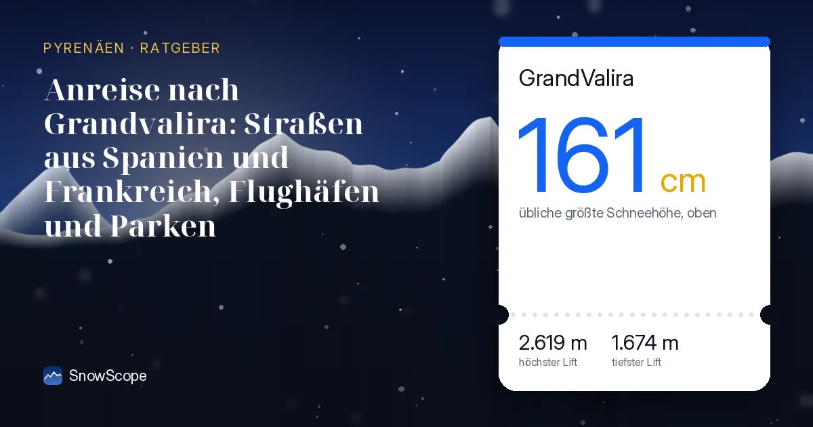
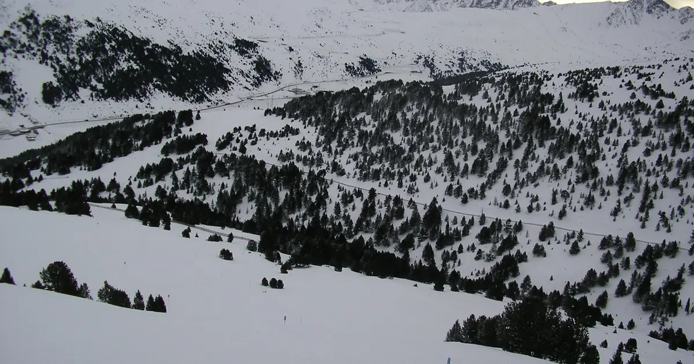

Anreise nach Grandvalira: Straßen aus Spanien und Frankreich, Flughäfen und Parken
Grandvalira erstreckt sich über zwei andorranische Pfarrgemeinden entlang einer einzigen Talstraße, mit Zugängen vom spanischen Süden und vom französischen Norden am Pas de la Casa. Da Andorra keinen Flughafen und keinen Zugverkehr hat, fährt jeder Skifahrer oder nimmt einen Bus aus Frankreich oder Spanien.
Die Live-Schneeprognose für GrandValira in der SnowScope-AppSchneehöhen, Pulverschnee-Alarme und 3D-Karte, gratis.

Anfahrt aus Spanien
Die spanische Route nutzt die Autobahn C-16 von Puigcerdà oder die C-145 von Lleida, die sich in La Seu d'Urgell etwa 30 km südlich des Skigebiets treffen. Von dort führt die Straße CG2 nach Norden in Andorras Hauptskital. Die Route ist ganzjährig offen, verläuft aber über 2.000 m, daher sind Winterreifen und Ketten unbedingt erforderlich.
Im Tal hast du fünf Zugangszonen: Encamp am Fuße, dann Canillo, El Tarter, Soldeu und schließlich Grau Roig und Pas de la Casa in der Nähe des Kamms zu Frankreich. Jede Zone hat ihre eigenen Parkplätze und Liftanbindung, daher kannst du wählen, wo du parkst, je nach dem Sektor, in dem du fahren möchtest.
Überfahrt aus Frankreich
Aus Frankreich erreicht die N-22 Pas de la Casa an der Grenze selbst, dem höchsten Zugang zu Grandvalira. Von dort führen zwei Routen ins Tal hinab: die offene Straße über den Port d'Envalira auf 2.408 m oder ein Mautstollen von 3 km Länge, der 2002 eröffnet wurde, auf etwa 2.000 m verläuft und bei schlechtem Wetter Zeit spart.
Der Stollenexit liegt in der Nähe von Grau Roig, dem obersten Skisektor. Wenn du die offene Straße nutzt, rechne mit mehr Zeit und prüfe vorher die Bedingungen, denn Wind und Schnee können die Sicht und die Bodenhaftung am hohen Pass beeinflussen.

Flughäfen und Busverbindungen
Andorras eigener Flughafen in La Seu d'Urgell, 27 km entfernt, bietet begrenzte Flüge. Die meisten Skifahrer fliegen in größere Hubs: Toulouse-Blagnac (176 km), Carcassonne (176 km), Barcelona-El Prat (200 km) oder Girona-Costa Brava (260 km). Von dort kannst du einen Mietwagen nehmen oder einen Reisebus nach Andorra nehmen.
Grandvalira bietet innerhalb Andorras einen kostenlosen Skibus an, daher kostet die Fahrt zwischen Liftbasen oder Parkplätzen nichts, wenn du ein Skikartenpaket hast. Fahrten von den großen Flughäfen mit dem Auto dauern je nach Verkehr und gewählter Grenze drei bis fünf Stunden.
Wo parken
Grandvalira veröffentlicht kostenlose Platzanzahlen auf größeren Parkplätzen in Echtzeit. Der Sektor El Tarter in Encamp bietet 850 kostenlose Außenparkplätze, während kostenpflichtiges Parkhaus in Soldeu, Canillo und der Funicamp in Encamp verfügbar ist. An Wochenenden und Schulferien füllen sich die kostenlosen Parkplätze früh, daher prüfe vor der Abreise die Parkplatzseite des Skigebiets oder komme vor 09:00 Uhr an.
Die Talstraße (CG2) verläuft durch jeden Sektor, daher musst du nicht die gesamte Strecke fahren, um die oberen Zonen zu erreichen. Parke an deinem gewählten Zugangspunkt, fahre mit den Liften bergauf und erkunde von dort die ganze Domäne.
Winterfahren – das Wichtigste
Alle Zufahrtsrouten nach Andorra führen über 2.000 m hinauf. Schnee setzt sich regelmäßig ab: auf Mittelhöhe bei Grandvalira (2.146 m) liegt etwa 168 Tage pro Saison Schnee, die tiefste Schneedecke ist üblicherweise im Februar. Führe Winterreifen, Ketten und einen Eiskratzer mit, und prüfe die Straßenverhältnisse vor der Abfahrt.
Die andorranische Verkehrsbehörde (www.mobilitat.ad) veröffentlicht aktuelle Meldungen zur CG2 und zur Envalira-Straße. Bei Stürmen ist der Stollen aus Frankreich oft sicherer als der hohe Pass. Rechne mit mehr Zeit, wenn Schnee fällt oder der Wind böig ist.
Was du in der Talseehöhe erwarten kannst
Der Talboden in Encamp liegt auf 1.674 m, daher ist die Schneedecke in der Frühen Saison dünn und felsige Stellen können durchscheinen. Die Mittelhöhe-Lifte führen auf 2.146 m, wo der typische Spitzenschnee von 102 cm ankommt, und die Gipfelzone steigt auf 2.619 m mit üblicherweise 161 cm an. Dieser Höhenunterschied bedeutet bessere Schneeverlässlichkeit weiter oben.
Im November und April ist Schnee auf Talseehöhe selten; Dezember bis März ist, wenn das Tal am meisten Schnee hält. Planen Sie Ihre Reise für Januar bis März, wenn Schneehöhe Ihre Hauptsorge ist.
Tipps für Skifahrer
- Buche einen Mietwagen im Voraus, wenn du fliegst; Busfahrpläne sind häufig, aber weniger flexibel als ein privates Fahrzeug.
- Winterausrüstung ist Pflicht: die CG2 und die Envalira-Straße kreuzen beide über 2.000 m und können bei Schneefall gesperrt werden.
- Nutze an vollen Wochenenden statt des Autos den kostenlosen Skibus des Skigebiets zwischen den Sektoren.
- Prüfe die Website der andorranischen Verkehrsbehörde am Morgen deiner Fahrt; bei Stürmen ist der Stollen aus Frankreich oft sicherer als der offene Pass.
- Bevor du irgendwo im Gelände in Andorra unterwegs bist, lese das offizielle Lawinenbulletin des Servei Meteorològic Nacional d'Andorra.
Zu diesen Zahlen
Die Schneehöhen der Skigebiete sind der meiste Schnee in den oberen Hängen am angegebenen Tag; es sind Schätzungen für eine Fläche, keine Messung an einem Punkt. Prognosen können sich ändern. Lies vor dem Freeriden immer den offiziellen Lawinenlagebericht.
Offizielle Lawinenlageberichte: Servei Meteorològic Nacional d'Andorra – Estat de la neu
Diesen Bericht zitieren
Für Forschung, Lehre oder Presse: Zahlen und Grafiken sind unter CC BY 4.0 mit dieser Quellenangabe frei nutzbar.
SnowScope (2026), Anreise nach Grandvalira: Straßen aus Spanien und Frankreich, Flughäfen und Parken, https://snowscope.app/blog/de/2026/11/how-to-get-to-grandvalira-andorra-roads-airports-parking.html, abgerufen am 2026-11-09
SnowScope (Atlas Labs). (2026, November 9). Anreise nach Grandvalira: Straßen aus Spanien und Frankreich, Flughäfen und Parken. SnowScope snow reports. https://snowscope.app/blog/de/2026/11/how-to-get-to-grandvalira-andorra-roads-airports-parking.html
BibTeX
@misc{snowscope2026howtogettograndvaliraand,
author = {{SnowScope (Atlas Labs)}},
title = {Anreise nach Grandvalira: Straßen aus Spanien und Frankreich, Flughäfen und Parken},
year = {2026},
month = nov,
howpublished = {\url{https://snowscope.app/blog/de/2026/11/how-to-get-to-grandvalira-andorra-roads-airports-parking.html}},
note = {Published 2026-11-09 16:44 UTC; accessed 2026-11-09}
}· CC BY 4.0 · Methoden, Daten und Werkzeuge →
GrandValira: Schnee und Temperatur nach Höhe, dieser Winter vs letzter (Werkzeuge) →
GrandValira folgen
Gratis: eine Nachricht, wenn Neuschnee kommt, und jeden Morgen die Vorhersage.
Weitere Schneeberichte

So gelingt ein Tag in Luz-Ardiden, einem kleinen Skigebiet über Luz-Saint-Sauveur in den Hautes-Pyrénées: die Straße, die zwei Sektoren, der Schnee aus 46 vergangenen Wintern und die besten Wochen.

Unsere Prognose hat die Nullgradgrenze in den Pyrenäen in den kommenden Tagen zwischen 2.610 m und 3.840 m. In der wärmsten Zeit des Tages steigt die …